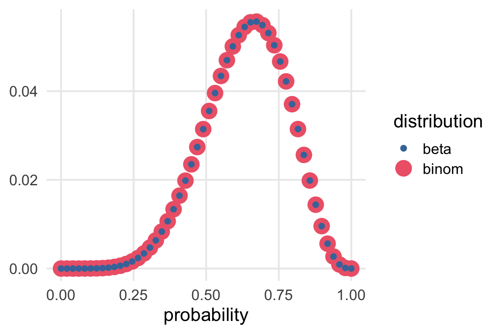

renv::install("khroma")
Listening
library(tidyverse)
library(khroma)
library(gt)
library(patchwork)
library(here)
source(here("_defaults.R"))A nicer table version.
I’d like to re-represent the Bayesian Update in a nicer GT table. Some options are
- Plotting extensions from
{gtExtras} - Emojis
renv::install("gtExtras")
renv::install("svglite")
renv::install("emoji")library(gtExtras)
library(emoji)First, trying the “win/losses” column plot from {gtExtra} to illustrate the blue vs white marbles.
tibble(
blue_marbs = 0:4,
white_marbs = 4 - blue_marbs
) |>
rowwise() |>
mutate(
marbles = list(c(rep(1, blue_marbs),
rep(0, white_marbs)))
) ->
marbles_wlThe cell background will have to be off-white for the white ticks to show
marbles_wl |>
gt() |>
gt_plt_winloss(marbles, palette = c("blue", "white", "grey")) |>
tab_style(style = cell_fill(color = "antiquewhite"),
locations = cells_body())| blue_marbs | white_marbs | marbles |
|---|---|---|
| 0 | 4 | |
| 1 | 3 | |
| 2 | 2 | |
| 3 | 1 | |
| 4 | 0 |
Table 1:
Representing marble compositions with ‘win-loss’ plots
I’m not overwhelmed by the result. I’ll try emojis instead.
blue_marb <- emojis |>
filter(str_detect(name, "blue"),
str_detect(name, "circle")) |>
pull(emoji)
blue_marb[1] "üîµ"white_marb <- emojis |>
filter(str_detect(name, "white"),
str_detect(name, "circle")) |>
pull(emoji)
white_marb[1] "⚪"tibble(
blue_marbs = 0:4,
white_marbs = 4 - blue_marbs
) |>
rowwise() |>
mutate(
marbles = list(c(rep(blue_marb, blue_marbs),
rep(white_marb, white_marbs)))
) ->
marbles_emojimarbles_emoji |>
gt()| blue_marbs | white_marbs | marbles |
|---|---|---|
| 0 | 4 | ⚪, ⚪, ⚪, ⚪ |
| 1 | 3 | üîµ, ⚪, ⚪, ⚪ |
| 2 | 2 | üîµ, üîµ, ⚪, ⚪ |
| 3 | 1 | üîµ, üîµ, üîµ, ⚪ |
| 4 | 0 | üîµ, üîµ, üîµ, üîµ |
Table 2:
Representing marble compositions with emoji
Update: As it turns out, getting tables with emoji and the plots with gt_plt_*() do not play nice with LaTeX. For now, I’m saving the tables to png with gtsave() just for the pdf output.
Yes, this is it.
Rerunning the sampling
I’ll re-run the sampling from the previous post.
sampling_df <- function(marbles,
n = 1000,
size = 3,
pattern = c(blue_marb, white_marb, blue_marb)){
sampling_tibble <- tibble(samp = 1:n)
sampling_tibble |>
mutate(
chosen = map(samp,
~sample(marbles,
size = 3,
replace = T)),
match = map_lgl(chosen,
~all(.x == pattern))
) |>
summarise(prop_match = mean(match))->
sampling_tibble
return(sampling_tibble)
}marbles_emoji |>
ungroup() |>
mutate(
prob = map(marbles, ~sampling_df(.x, n = 10000))
) |>
unnest(prob) |>
mutate(norm_probs = prop_match/sum(prop_match))->
marble_probsI want to label the column of probabilities with the key sequence.
key_seq <- str_glue("{blue_marb}, {white_marb}, {blue_marb}")gtExtras::gt_plt_bar_pct() will plot a bar chart within the table.
marble_probs |>
select(marbles, norm_probs) |>
mutate(norm_probs = norm_probs * 100) |>
gt() |>
cols_label(
norm_probs = str_glue("p(marbles | {key_seq})")
) |>
gt_plt_bar_pct(norm_probs,
scaled = T,
fill = "steelblue")| marbles | p(marbles | üîµ, ⚪, üîµ) |
|---|---|
| ⚪, ⚪, ⚪, ⚪ | |
| üîµ, ⚪, ⚪, ⚪ | |
| üîµ, üîµ, ⚪, ⚪ | |
| üîµ, üîµ, üîµ, ⚪ | |
| üîµ, üîµ, üîµ, üîµ |
Table 3:
Probability of each marble composition given (üîµ, ‚ö™Ô∏è, üîµ) samples with replacement.
There we go!
With the Bayesian Update
marble_probs |>
mutate(new_prob = blue_marbs/sum(blue_marbs),
multiplied = norm_probs * new_prob,
norm_new = multiplied/sum(multiplied)) |>
select(marbles, norm_probs, norm_new) |>
mutate(norm_probs = norm_probs * 100,
norm_new = norm_new * 100) |>
gt() |>
cols_label(
norm_probs = str_glue("p(marbles | {key_seq})"),
norm_new = str_glue("after {blue_marb}")
) |>
gt_plt_bar_pct(norm_probs,
scaled = T,
fill = "steelblue") |>
gt_plt_bar_pct(norm_new,
scaled = T,
fill = "steelblue") |>
cols_width(2 ~ px(200),
3 ~ px(200))| marbles | p(marbles | üîµ, ⚪, üîµ) | after üîµ |
|---|---|---|
| ⚪, ⚪, ⚪, ⚪ | ||
| üîµ, ⚪, ⚪, ⚪ | ||
| üîµ, üîµ, ⚪, ⚪ | ||
| üîµ, üîµ, üîµ, ⚪ | ||
| üîµ, üîµ, üîµ, üîµ |
Table 4:
Probability of each marble composition given an additional (üîµ) sample
Bayesian Updating
I’ll try to illustrate Baysian updating with an animated plotly plot.
renv::install("plotly")
renv::install("slider")library(plotly)
library(slider)I know enough to know that the distribution that’s being updated is the beta. (Apparently is the binomial. Still a but lost on their distinction!) So I’ll get the density for each update.
plot(
seq(0,1, length =100),
dbeta(seq(0,1, length =100), 1, 1),
type = 'l'
)
water_land_sequence <- c("W", "L", "W", "W", "L", "W", "L", "W")I’ll use slider::slide() to generate a data frame of sample updates. I’ll need a function that takes a sequence of W and L and converts them into counts.
w_l_count <- function(x){
tibble(
water = sum(x == "W"),
land = sum(x == "L")
)
}slide(water_land_sequence,
.f = w_l_count,
.before = Inf,
.after = 0) |>
bind_rows() |>
mutate(seq = row_number()) |>
bind_rows(
tibble(
water = 0,
land = 0,
seq = 0
)
) |>
arrange(seq) ->
sequence_countssequence_counts |>
gt()| water | land | seq |
|---|---|---|
| 0 | 0 | 0 |
| 1 | 0 | 1 |
| 1 | 1 | 2 |
| 2 | 1 | 3 |
| 3 | 1 | 4 |
| 3 | 2 | 5 |
| 4 | 2 | 6 |
| 4 | 3 | 7 |
| 5 | 3 | 8 |
Table 5:
Table of water, land count updates
Now to get the densities.
sequence_counts |>
rowwise() |>
mutate(
density = map2(
water, land, ~tibble(
prop = seq(0.0001, 0.9999, length = 100),
density_unstd = dbinom(water, size = water + land, prob = prop),
density = density_unstd/sum(density_unstd)
)
)
) |>
unnest(density)->
density_updatesdensity_updates |>
ggplot(aes(prop, density))+
geom_line(aes(group = seq, color = seq))Good first step.
I had to turn to the plotly book to get the animated lines correct https://plotly-r.com/animating-views.html.
sequence_counts |>
mutate(
annotation = str_glue("W:{water}, L:{land}")
) ->
wl_annotatedensity_updates |>
plot_ly() |>
add_lines(
x = ~prop,
y = ~density,
frame = ~seq,
line = list(simplify = F, width = 3)
) |>
add_text(
data = wl_annotate,
text = ~annotation,
frame = ~seq,
x = 0.1,
y = 0.025,
textfont = list(size = 20)
) |>
layout(
showlegend = F
)Update: I started making this just for the pdf, which can’t have the animation, but it’s actually kind of nice enough to include in the html.
density_updates |>
group_by(prop) |>
arrange(seq) |>
mutate(
prev_density = lag(density),
facet_lab = str_glue("W:{water}, L{land}")
) |>
ggplot(aes(prop, density))+
geom_area(aes(y = prev_density), linetype = 2, alpha = 0.2)+
geom_area(alpha = 0.6, fill = "steelblue")+
scale_y_continuous(expand = expansion(mult = c(0,0)))+
facet_wrap(~facet_lab)+
theme(
axis.title.y = element_blank(),
axis.text.y = element_blank(),
axis.text.x = element_text(size = 8),
panel.grid.major.y = element_blank()
)On priors
The fact that statistical inference uses mathematics does not imply that there is only one reasonable or useful way to conduct an analysis.
Grid approximation
Ok, I’ll do one grid approximation for the hell of it.
…
Got distracted and went down a rabbit hole on the beta vs binomial distributions.
tibble(
prob = seq(0.0001, 0.9999, length = 50),
prior_unstd = case_when(
prob < 0.5 ~ 0,
.default = 1
),
prior_std = prior_unstd/sum(prior_unstd),
likelihood_binom = dbinom(6, size = 9, prob = prob),
l_binom_std = likelihood_binom/sum(likelihood_binom),
likelihood_beta = dbeta(prob, 6, 9-6),
l_beta_std = likelihood_beta/sum(likelihood_beta)
) |>
ggplot(aes(prob))+
geom_point(aes(y = l_binom_std, color = "binom"))+
geom_point(aes(y = l_beta_std, color = "beta"))+
scale_color_bright()+
labs(
x = "probability",
color = "distribution",
y = NULL
)Glad I did this. I guess
dbinom\(\propto P(O, S | p)\)dbeta\(\propto P(p|O,S)\)
I guess I’d want to see dbinom plotted out with O on the x axis?
tibble(
probability = seq(0.0001, 0.9999, length = 10)
) |>
rowwise() |>
mutate(
densities = map(
probability,
~tibble(obs = 0:9,
density = dbinom(obs, size = 9, prob = .x))
)
) |>
unnest(densities) ->
binomial_densities
binomial_densities |>
ggplot(aes(obs, density, color = probability))+
geom_point()+
geom_line(aes(group = probability)) +
geom_rect(
color = "red",
fill = NA,
xmin = 5.5,
xmax = 6.5,
ymin = 0,
ymax = 1
)+
scale_color_batlow()What we’re plotting out is what’s in the red box, flipped on its side.
binomial_densities |>
filter(obs == 6) |>
ggplot(aes(probability, density))+
geom_line()+
geom_point(aes(color = probability))+
scale_color_batlow()Update!
Thanks TJ!
i forgot how i know this but they are the same if you plug in
likelihood_beta = dbeta(prob, 1 + 6, 1 + 9-6),‚Äî tj mahr üççüçï (@tjmahr) May 10, 2023
tibble(
prob = seq(0.0001, 0.9999, length = 50),
prior_unstd = case_when(
prob < 0.5 ~ 0,
.default = 1
),
prior_std = prior_unstd/sum(prior_unstd),
likelihood_binom = dbinom(6, size = 9, prob = prob),
l_binom_std = likelihood_binom/sum(likelihood_binom),
likelihood_beta = dbeta(prob, (6+1), (9-6)+1),
l_beta_std = likelihood_beta/sum(likelihood_beta)
) |>
ggplot(aes(prob))+
geom_point(aes(y = l_binom_std, color = "binom", size = "binom"))+
geom_point(aes(y = l_beta_std, color = "beta",size = "beta"))+
scale_color_bright()+
labs(
x = "probability",
color = "distribution",
size = "distribution",
y = NULL
)